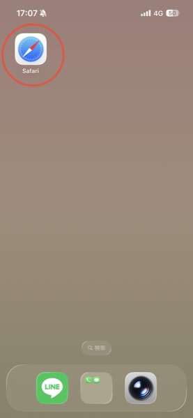
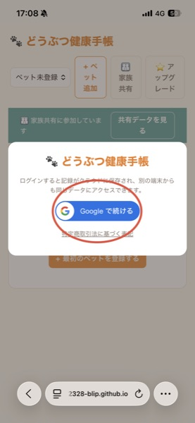
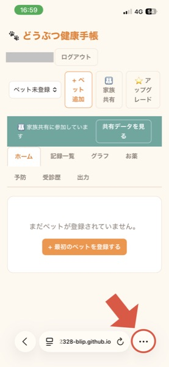
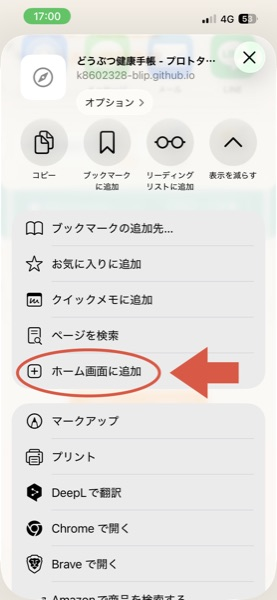
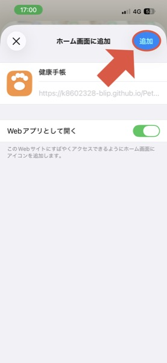
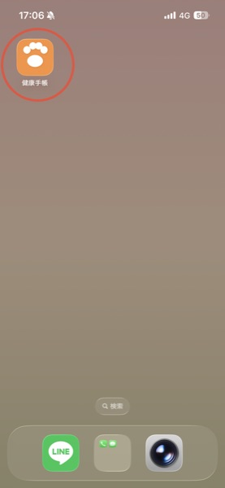
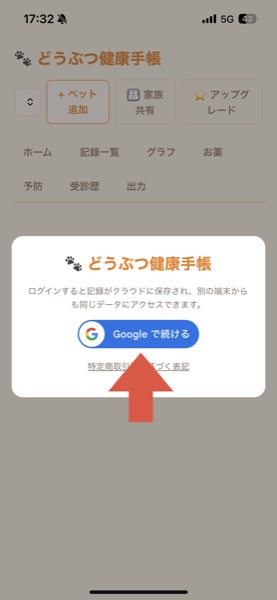

← どうぶつ健康手帳に戻る
📱 iPhoneでホーム画面に追加する方法
ホーム画面に追加すると、アイコンをタップするだけでアプリのようにすぐ開けるようになります。
無料でどなたでも設定でき、以下の手順は数分で完了します。
🔔 投薬リマインダーのプッシュ通知は「治療サポートプラン」にご加入の方のみの機能です。
ホーム画面への追加はどなたでも無料でできますが、これだけでは通知は届きません。
通知を使いたい方は、この手順の後に「お薬」タブから「投薬リマインダー通知を有効にする」を押してください
(iPhoneでは、通知を使う場合もこのホーム画面への追加とアイコンからの再ログインが必須です)。
⚠️ ホーム画面に追加したアイコンは、通常のSafariとは別のログイン状態として扱われるため、
アイコンから開いた直後にもう一度Googleアカウントでのログインが必要です(手順⑧)。
1Safariでどうぶつ健康手帳を開く

URLをコピーしてSafariのアドレス欄に貼り付けても開けます。
2Googleアカウントでログインする

3画面右下の「…」をタップ

5「ホーム画面に追加」をタップ

6右上の「追加」をタップ

7ホーム画面に追加されたアイコンをタップして開く

8アイコンから開いた画面で、もう一度Googleアカウントでログインする

ログイン後、「お薬」タブから「投薬リマインダー通知を有効にする」をタップすれば設定完了です。